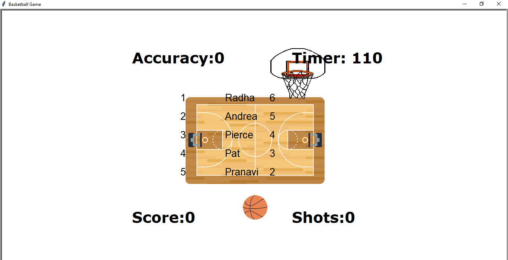
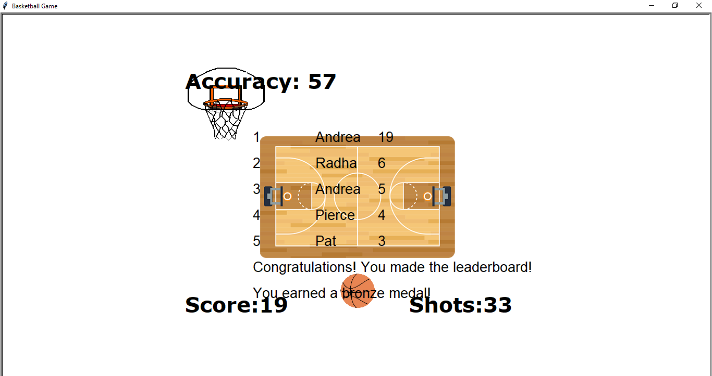

MY PORTFOLIO PAGE
Project 1.1.9 - Spongebob Tic Tac Toe


We created a program in which the user can play tic tac toe, alternating turns between placing Spongebob or Patrick. Whoever’s turn is first will be Patrick, and when they click on a square, if empty, a turtle will move to that space and draw Patrick. If that place has already been chosen, the user will get a message saying “_____[either Patrick or Spongebob] is already on that square. Choose again!” Once Patrick or spongebob are in 3 spaces next to each other in a horizontal, vertical, or diagonal line, the user will get a message saying “_____[either Patrick or Spongebob] won the match!”
We did this by first making two separate python files, one that uses the turtle module to draw spongebob, and the other to draw Patrick which were defined as a function either called make_patrick or make_spongebob. We imported these files into the main file. In the main file we defined an additional 4 functions. They were called make_board, search_winner, find_square, and make_next_guess and written in that order. After defining the functions, we made a list, with 9 empty quotations, one for each square. The program then called the make_board function which drew the lines to make the tic tac toe board using the turtle module. Then we used the method, turtle.onscreenclick, with the function, find_square, as its parameter. This function would determine which square was clicked on using x and y as parameters. After determining the chosen square through conditional statements it would call the function make_next_guess with the appropriate coordinates and index in the list. This function used conditional statements to determine whether the chosen square was already taken, and, if not, it would draw the figure in the appropriate coordinates (using the make_patrick/spongebob function) and add the name (either spongebob or patrick) to the list at the appropriate index. Meanwhile, the search_winner function would be called. This function used conditional statements as well as and/or statements to find the winner by checking if the appropriate indexes were equal to each other.
Project 1.2.5 - Baketball Game
 We incorporated user input through them moving and shooting the basketball by using the “s” and arrow keys. We have colors through our background image, basketball hoop image, as well as the basketball image which we changed the shape of the turtle too, as well as its size by using tkinter. Before the window opens, the game will ask for the program's name. Once the window is opened, it will show the current leaderboard. Everytime the user shoots, the “shots” will increase by 1. If the user shoots and the ball collides within 100 pixels of the center of the hoop image, the “score” will increase by one, and the program will update score, shots, and the new accuracy (score/shots). At the end, if the user’s score makes it on the leaderboard, they will see their name and score in the appropriate spot. If they score eough times they will earn a bronze (15 points), silver (20 points), or a gold (25 points) medal.
To do this we imported our leaderboard file from our 1.2.2 project; however we made a few adjustments. We added a start_leaderboard function which uses string manipulation and the input of lists and a turtle object (which at the start is a turtle called leaderboard_writer) to present the leaderboard at the beginning. We had 8 turtle objects: the screen, leaderboard writer, the countdown writer, the score writer, the shots writer, the accuracy writer, the ball, and the hoop. Each piece of code that controls individual functions will be commented with code and the score and leaderboard will be updated according to the number of shots the user has scored. Our functions included the countdown function which through conditional statements keeps the countdown going down by one every second from 120 seconds until 0, when it will display times up. Then, there is the shoot function which under a conditional statement that ensures the time is not up yet, contains a for loop used to make the ball go up by 450 pixels, unless it collides with the hoop (determined through a conditional statement), in which case it will break out of the for loop, and the score will increase by 1 point. Regardless of scoring, the shoot function will keep increasing the shots by one and updating shots, accuracy, and score. If the time is up, the ball turtle will disappear. There is a manage_leaderboard function which updates the leaderboard file if the user’s score makes it on the leaderboard. There are then two functions to move the ball left or right 30 pixels. Then the functions are called through the command .onkeypress, shoot is called when “s” is hit, and moveright and moveleft is called when the right or left arrow key is hit. Then there is a while loop that allows the hoop to move within the range of the window and the countdown to continue as long as the timer is not up.